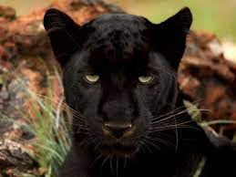

MAMIFEROS

Es un animal solitario, excepto en la época reproductora. Pasa mucho tiempo subido a los árboles donde descansa, vigila y guarda a sus presas después de cazarlas.
Caza de noche y duerme de día. Como un cazador, la pantera negra es un perseguidor ya que camina despacio muy cerca de su presa pudiendo tardar horas. Sus patas
rellenas son suaves, mientras el pelo en sus piernas absorbe ruido. El período de gestación en la hembra dura 3 meses, pudiendo tener entre 1 y 6 crías.
Abunda en las selvas del sureste asiático siendo más rara en las sabanas y bosques de África.
CARACTERISTICAS
- Mide de 1 a 1,5 m de longitud
- su cola mide entre 75 y 100 cm.
- pesan de 130 hasta 680 gr
- Su altura oscila entre los 45 y 62 cm.
- El pelaje es corto y ralo (más largo en los ejemplares que viven en la montaña)